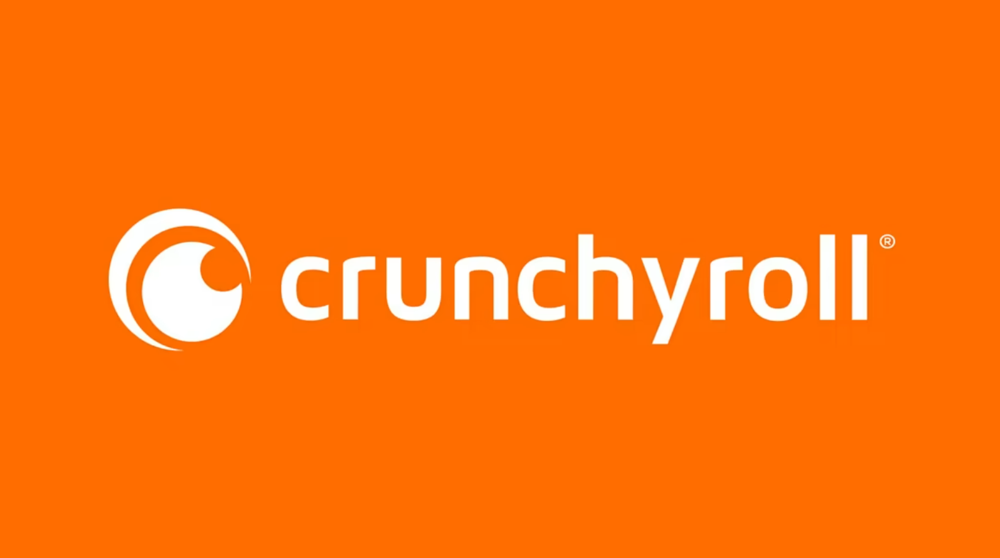
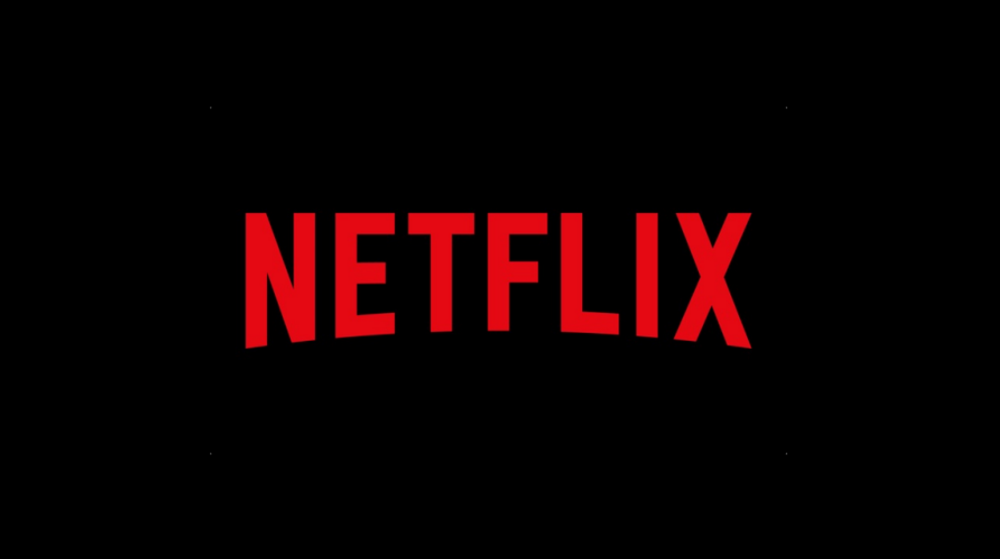

Where can you watch these shows?
Perhaps you found an anime in this list that peaked your interest. You may be asking yourself, where can I watch it? Luckily for you, I got you covered. I'll give you three options for you to pick from.
Number 1 - Crunchyroll
The most well known and popular place to watch anime from is 'Crunchyroll'. Crunchyroll offers a very large selection of anime for people to watch, and has both free and paid ways of using their site.
The free version works well, but you will have to deal with ads. If this is an issue for you, you may choose to upgrade to 'premium' instead. However, if you wish to upgrade to premium you will have to pay for a monthly subscription. The cheapest option would be the 'Fan' tier, which will set you back 7.99$ a month. If you wish to try out their premium service, you could choose to active a free 14-days trial run.
You can check out everything Crunchyroll has to offer on their website.
Number 2 - Netflix
Another place to watch anime from is actually 'Netflix'.
While the amount of anime that Netflix offers is a lot smaller than that of Crunchyroll, it can still be worth using for the shows that it does have. Especially if you already have a Netflix subscription, it would save you the effort of getting a Crunchyroll account. You can simply look up if the anime you want to watch is on there. If you do not already own a Netflix subscription however, I would recommend picking either Crunchyroll, or the next entry on this list.
If you do decide to use Netflix, you can find more on their website.
Number 3 - Aniwave.to
My third and final recommendation in this list is 'Aniwave'.
Aniwave, just like Crunchyroll, has a very large variety of anime for you to watch. Arguably more than Crunchyroll even. And the best part is: It's completely free to use! HOWEVER, as you might have guessed already, the content on this site is pirated.
While watching pirated content should not get you into trouble, if you are not comfortable using a site like Aniwave, I would recommend you visit Crunchyroll instead.
If you ARE comfortable viewing pirated content, Aniwave is, in my opinion, the best of its kind out there. You can expect high quality streaming services, without any ads interupting your episodes, as well as essentially every anime that has come out in the past decades ready for you to watch in both Japanese sub and English Dub.
One downside to using this site though, is that there are ads on the site itself. These ads are usually mallware and will often times fall under the 'NSWF' (Not Safe For Work) kind.
If you wish to check out Aniwave, you can do so here.
A final tip: Their full domain name is 'Aniwave.to'. Always make sure you are on the right website!